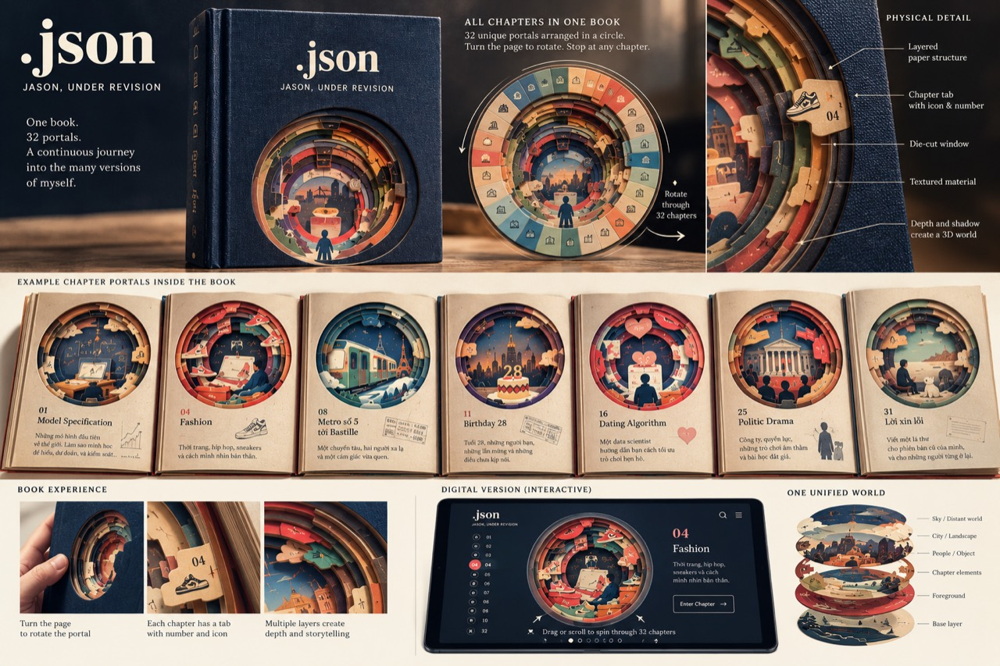

DẪN NHẬP
.json
Jason, under revision
Dẫn nhập
Lời dẫn theo đề cương tác phẩm.
DẪN NHẬP
.json
Jason, under revision
Lời dẫn theo đề cương tác phẩm.
.JSON / JASON, UNDER REVISION
Thứ tự đọc theo cấu trúc bản thảo.
Toàn văn đã có trong ấn bản số. Các chương còn lại hiện có đề cương.
MỤC LỤC BẰNG HÌNH ẢNH
Xoay vòng ký ức để chọn một chương.
BẢN LƯU
Các bài viết trước khi được xếp lại thành cuốn sách. Tên bài và số thứ tự trong bản lưu được giữ theo lần công bố.
GHI CHÚ ẤN BẢN
Cấu trúc đọc gồm lời mở đầu Cơm nguội, năm phần và ba mươi mốt chương. Các bài viết được đặt cạnh nhau theo hành trình thay đổi cách người kể nhìn cuộc đời.
Những bản đã công bố giữ nguyên câu chữ. Những chương chưa có toàn văn được đánh dấu là đề cương. Số thứ tự trong cuốn sách và trong bản lưu được phân biệt vì chúng thuộc hai lần sắp xếp khác nhau.
Thiết kế bìa vải xanh, cửa sổ tròn và các lớp giấy là ý tưởng cho ấn bản vật lý đang phát triển. Những hình ảnh dưới đây là bản thiết kế, chưa phải sản phẩm đã sản xuất.
